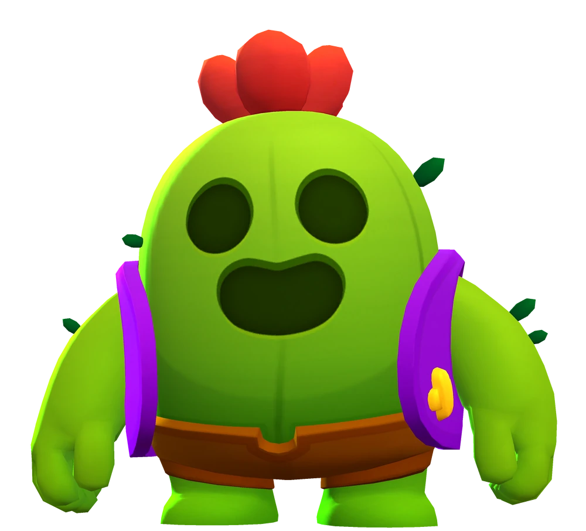
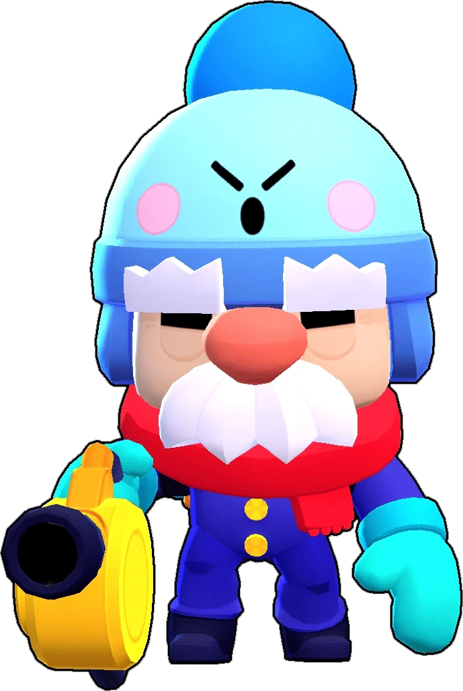
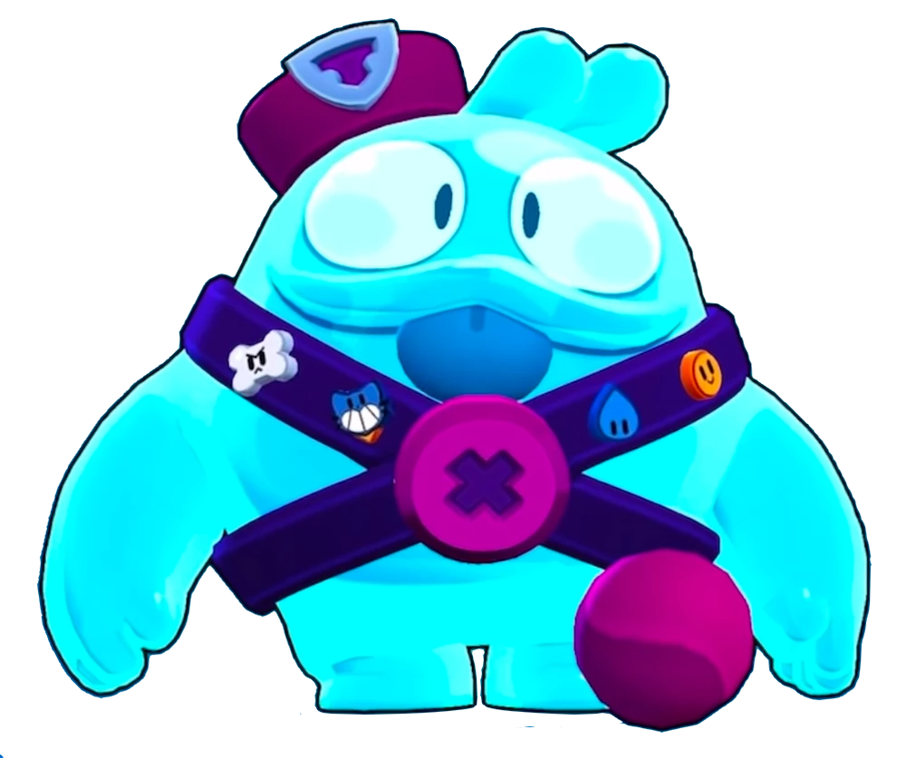

BRAWLERS
Los brawlers son los personajes jugables dentro del juego. Cada brawler es único en su estilo de juego, y son categorizados y divididos por tipos (clases) y calidades. Los brawlers pueden mejorarse para aumentar sus estadísticas y eventualmente poder desbloquear gadgets, refuerzos, habilidades estelares e Hipercargas.
Los brawlers funcionan a base de un sistema de niveles. Para poder mejorar a un brawler se necesitan cantidades específicas de monedas y puntos de fuerza que aumentan progresivamente a medida que el brawler aumenta su nivel. El nivel máximo de cualquier Brawler es 11.
SPIKE
Spike es un Brawler Legendario con poca salud, pero un daño devastadoramente alto. Su ataque es una bola espinosa que explota al impactar y se divide en 6 espinas. Su Súper lanza un proyectil espinoso que crea un área de púas en el suelo que ralentiza y daña. Su primer gadget, Lluvia de espinas, dispara rápidamente oleadas de espinas en todas direcciones a su alrededor.
GALE
Gale es un Brawler Épico, anteriormente el primer brawler de calidad Cromática. Es un amable anciano que trabaja como conserje en el Snowtel de Señor P junto a Lou. Tiene una salud moderada, una velocidad de recarga muy rápida y un daño constante. Gale ataca con seis bolas de nieve.
SQUEAK
Squeak es un brawler Mítico que pertenece al trío de Starr Force. Tiene una salud moderada pero una producción de daño por debajo del promedio. Ataca disparando una baba viscosa que se adhiere a los obstáculos y objetivos y luego explota después de un tiempo.